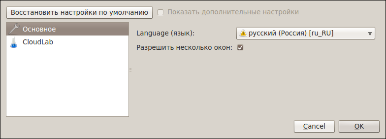
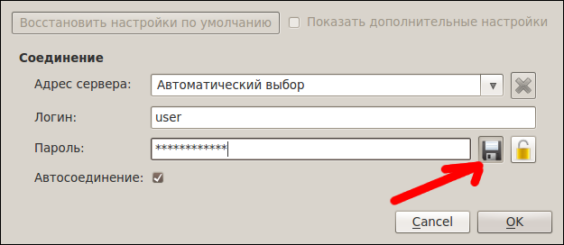
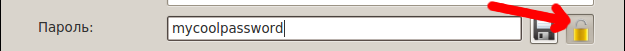
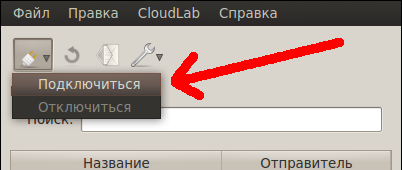

[Назад: 1.1 Регистрация и восстановление аккаунта]
[Далее: 1.3 Управление аккаунтом]
Настройки
Для более удобной работы с приложением предлагается несколько настроек. Они разделены на секции.
Чтобы вернуть настройки к исходным значениям, можно воспользоваться кнопкой "Восстановить настройки по
умолчанию" (восстанавливаются лишь некоторые настройки).
Секция "Основное"

Language (язык). Отвечает за язык интерфейса всего приложения.
Разрешить несколько окон. Выбор этой опции позволяет открывать несколько окон приложения одновременно.
Если же опция не выбрана, то повторный запуск приложения лишь активирует уже открытое окно.
Секция "CloudLab"

Адрес сервера. Позволяет указать адрес сервера CloudLab. По умолчанию адрес выбирается автоматически.
Логин. Логин - это ваш основной идентификатор в системе CloudLab.
Пароль. Пароль - это также ваш идентификатор, не менее важный, чем логин. Если вы не хотите каждый раз
вводить пароль при подключении, можно включить сохранение пароля при помощи соответствующей кнопки справа (показан
красной стрелкой на рисунке). Это безопасно, так как пароль хранится в зашифрованном виде.
Обычно пароль отображается в виде звездочек, чтобы его никто не подсмотрел, пока вы его вводите, однако, если вы не
уверены, что правильно набрали пароль, то можно сделать его видимым, нажав кнопку с изображением замочка (показана
крсаной стрелкой на рисунке ниже).

Автосоединение. Эта опция определяет, нужно ли автоматически подключаться к серверу при запуске
приложения. Для подключения требуется доступ к Интернету, и если у вас нет постоянного доступа к сети, то, возможно,
вам будет удобнее отключить данную опцию и подключаться вручную, воспользовавшись кнопкой, показанной на рисунке ниже.

[Назад: 1.1 Регистрация и восстановление аккаунта]
[Далее: 1.3 Управление аккаунтом]